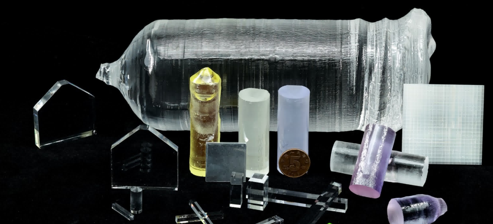
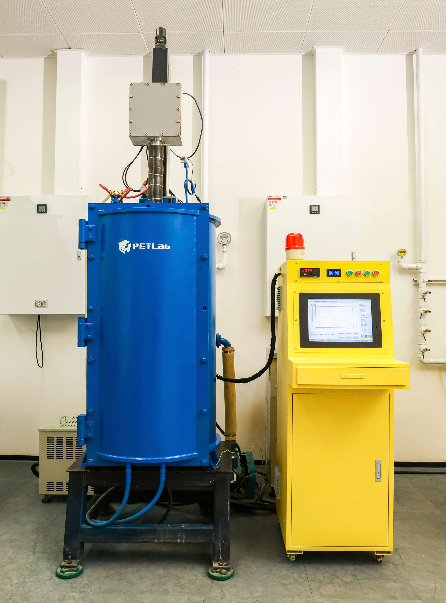
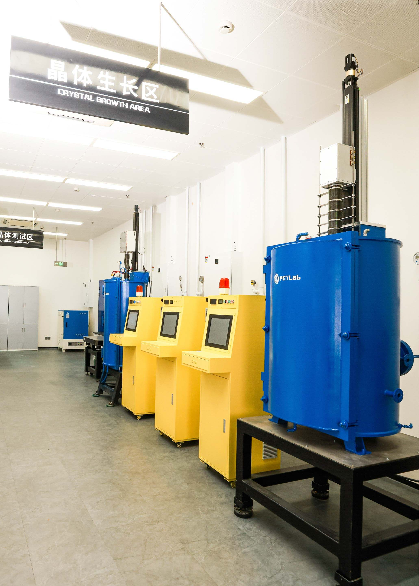
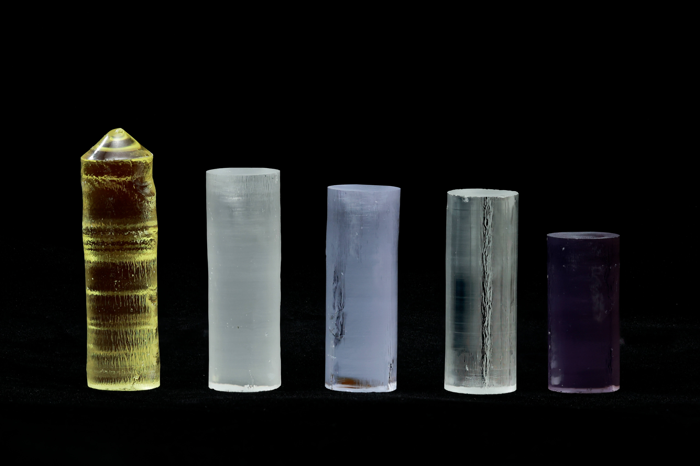
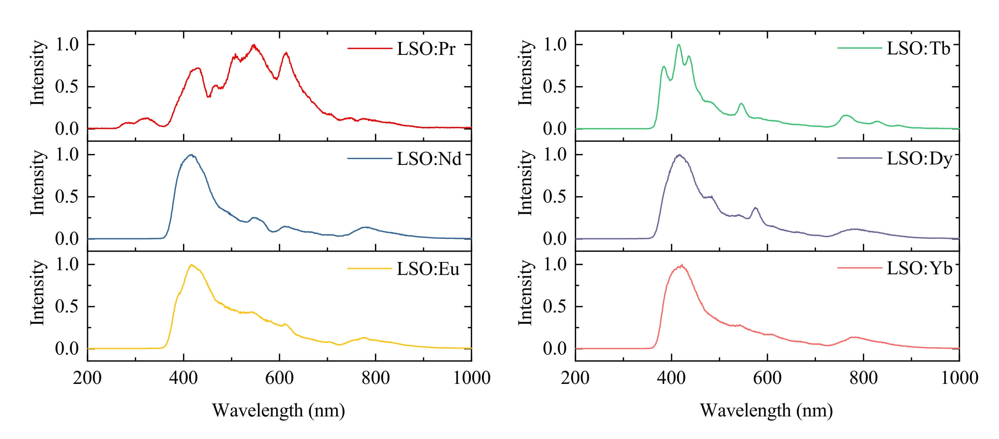
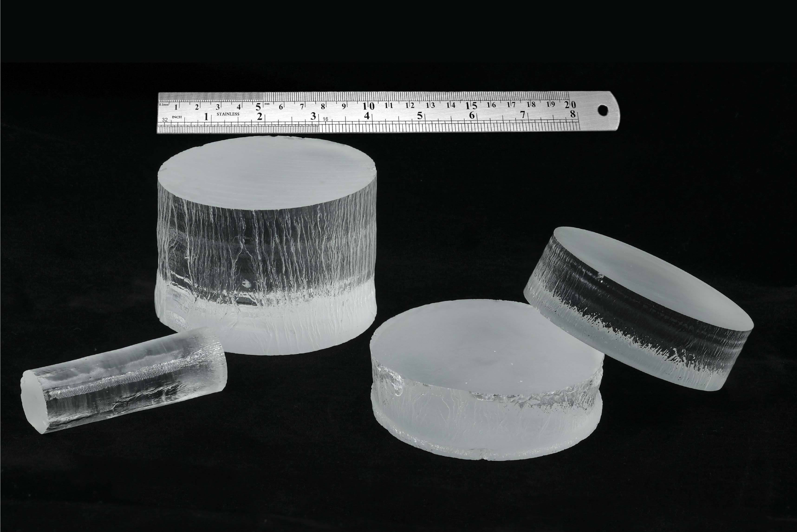
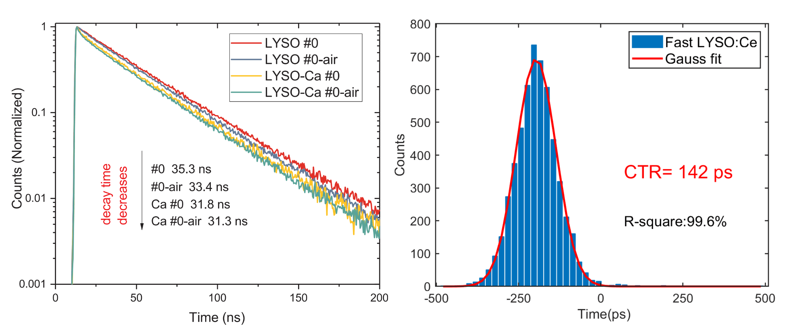
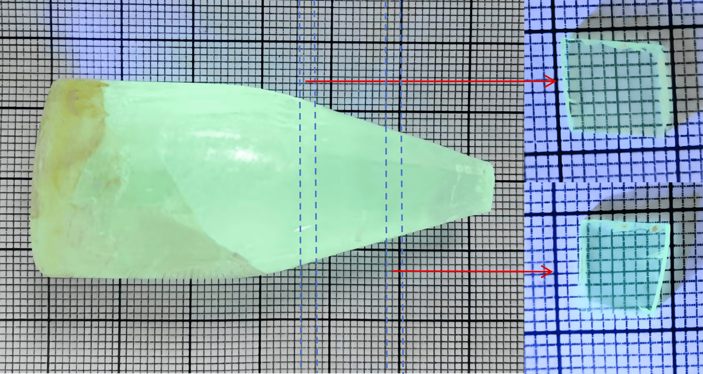
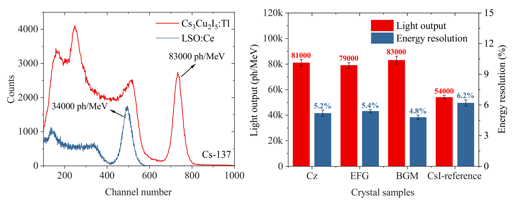

闪烁晶体
闪烁晶体组围绕稀土闪烁晶体和钙钛矿闪烁晶体两大体系，聚焦稀土元素4f-4f和4f-5d能级跃迁特性、低维钙钛矿构型自限域发光机理等前沿问题，致力于新型闪烁发光可编程方法设计和极限性能闪烁晶体材料研制。面向高性能闪烁晶体设计到应用的全链创新，为优秀学生和顶尖人才提供先进的闪烁晶体研发平台，从核心材料环节驱动 PET和CT 等医学影像领域的颠覆性变革。
闪烁晶体研究团队目前正与其他机构合作伙伴一同寻求外部资金支持。如有意向，请发送邮件至 petlab@hust.edu.cn 与我们联系。
前沿进展


闪烁晶体可控生长技术
以应用导向和AI赋能为核心理念，开发智能化闪烁晶体可控生长技术，革新传统晶体材料研发范式。研制了多功能晶体生长炉和定制化晶体生长软件，融合密度泛函模拟与AI组分优化，实现“理论设计—生长调控—性能反馈”的技术闭环，支撑新型晶体材料设计到应用全流程定制。


闪烁发光可编程方法
稀土元素丰富的能级蕴藏着多元的发光信息。聚焦稀土元素4f-4f和4f-5d跃迁特性，发掘稀土化合物中能级匹配和晶体场调控规律，实现闪烁发光时间和发光波长的可编程设计；进一步将调制的闪烁发光信息引入到前端探测，突破探测器性能本征极限。


高性能稀土闪烁晶体
围绕国家战略性重稀土资源在高端医疗设备和辐射安全等领域的高值利用，研制关键性能世界先进的稀土硅酸盐、稀土铝酸盐闪烁晶体。已成功开发高性能LYSO:Ce、YSO:Ce、GaGG:Ce和YGdAP:Ce等闪烁晶体，为全数字PET、光子计数CT等高端探测装备提供了核心材料支撑。


新构型钙钛矿闪烁晶体
钙钛矿闪烁晶体的发光原理和结晶机制尚存在大量科学盲区。依托原子算筹计算平台，揭示低维钙钛矿构型自限域发光机理、探索钙钛矿超快闪烁发光机制。以此为基础，建立多功能熔体法生长系统，成功生长厘米级Cs3Cu2I5钙钛矿晶体，达到光输出83000
ph/MeV、能量分辨率4.8%的优异性能，为大尺寸钙钛矿单晶的稳定制备和应用突破奠定基础。
最新新闻


12月12日
数字PET实验室
针对这一世界性难题，武汉光电国家实验室（筹）生物医学光子学研究部研究员、华中科技大学生命学院教授谢庆国创新性地提出“多电压阈值采样方法”，准确实现高速闪烁脉冲的精确数字化，研制出...
进一步探索
重点论文
Comprehensive property engineering of YGdAP:Ce scintillation crystals by optimizing the Y/Gd ratio
Aug 08
CrystEngComm, 2025, 27(34): 5702-5713.
doi:10.1039/d5ce00502g.
A Low-Noise High-Photon Detection Efficiency Silicon Photomultiplier in 0.11-μm CMOS
Jan 16
IEEE Transactions on Electron Devices,
2025, 72(2): 769-777. doi:10.1109/TED.2024.3520533.
Optical and scintillation properties of modified LSO crystals with different ions doping grown by a rapid CZ system.
Feb 1
Journal of Crystal Growth,
627, 2024, 127523. doi:10.1016/j.jcrysgro.2023.127523.